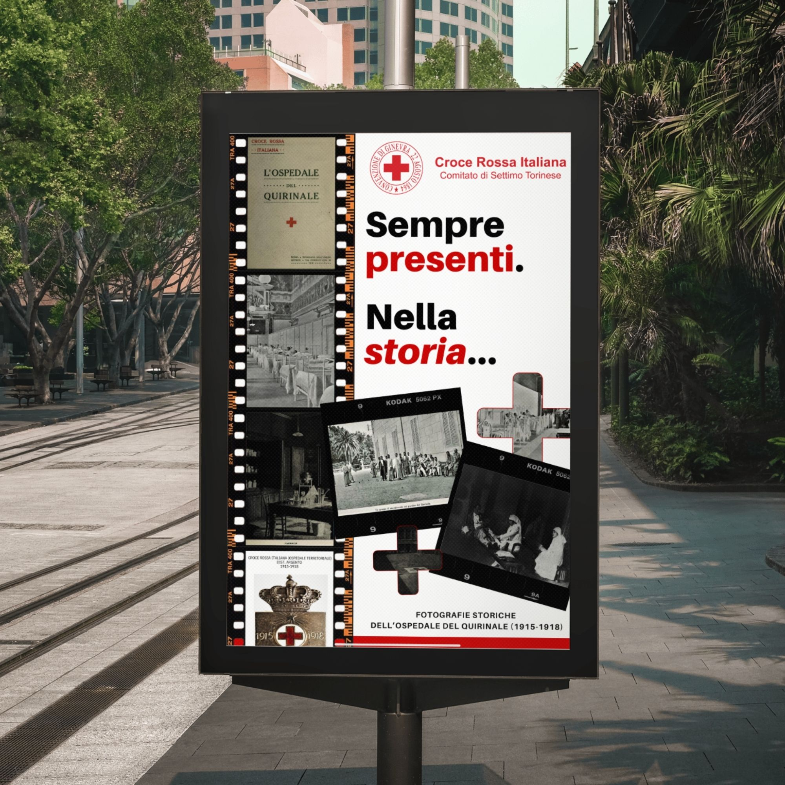
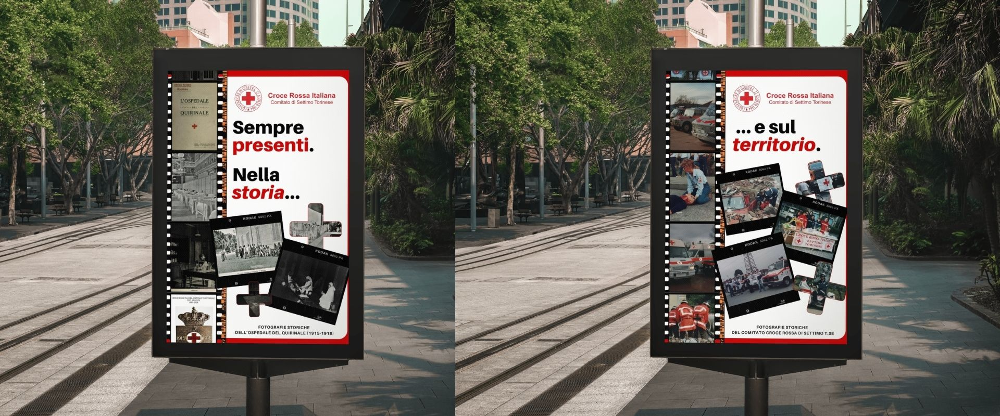
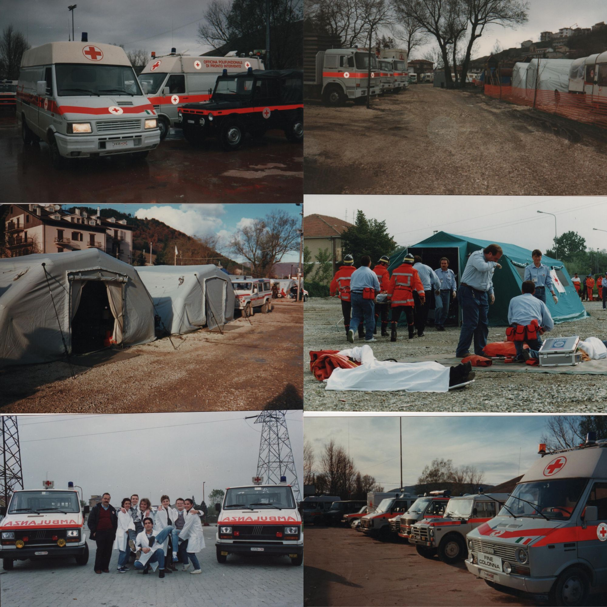
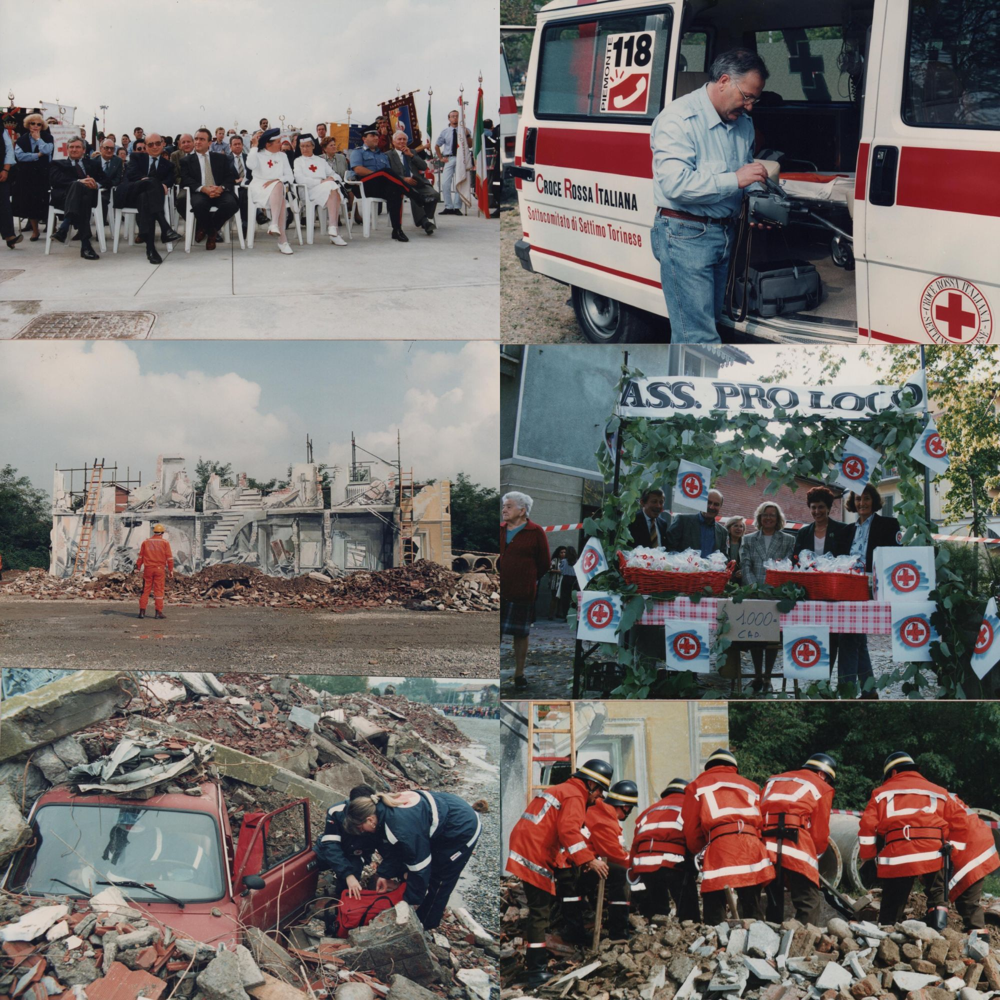

Design — AD Design
AD Design
Italian Red Cross of Settimo Torinese
Design of a commemorative poster for Croce Rossa Italiana — Comitato di Settimo Torinese, created for their participation with historic vehicles in a historical re-enactment event in Settimo Torinese. The project combined archival photography and a editorial graphic language to connect the organisation's century-long legacy with a contemporary audience — delivered in print-ready format for large-format display.
Concept
Creative Process
The Comitato di Settimo Torinese has been active in the local community since 1974 — and that rootedness became the conceptual core of the poster. The Croce Rossa's historic vehicles are more than operational assets; they are physical markers of a presence that has accompanied the city through decades of change. The design draws on archival photography and film strip imagery to anchor that continuity, translating fifty years of local history into a single, immediate visual. The result moves away from generic institutional communication toward something more personal and documentary — designed to resonate with the community it has always served.
Brief
Design a commemorative poster for Croce Rossa Italiana — Comitato di Settimo Torinese, celebrating their presence with historic vehicles at a local historical re-enactment event — visually connecting fifty years of community service with the organisation's deeper archival heritage.
Tools
Deliverable
Two print-ready commemorative posters designed as a visual sequence optimised for large-format display.

Process
Behind the mark
Research
Archival research into the Comitato's local history and photographic heritage, collection of visual references, and alignment with the client on tone, narrative direction, and event context.
Concept
Definition of the visual narrative across the two-poster sequence — establishing the editorial language, the relationship between archival imagery and typography, and the progression from one poster to the next.
Design
Construction of both posters through iterative feedback rounds with the client, balancing historical material with a clear, contemporary graphic layout suited to large-format print.
Delivery
Final print-ready files for both posters, optimised for large-format display and delivered in the formats required for the event.
Palette cromatica
Colori del progetto

